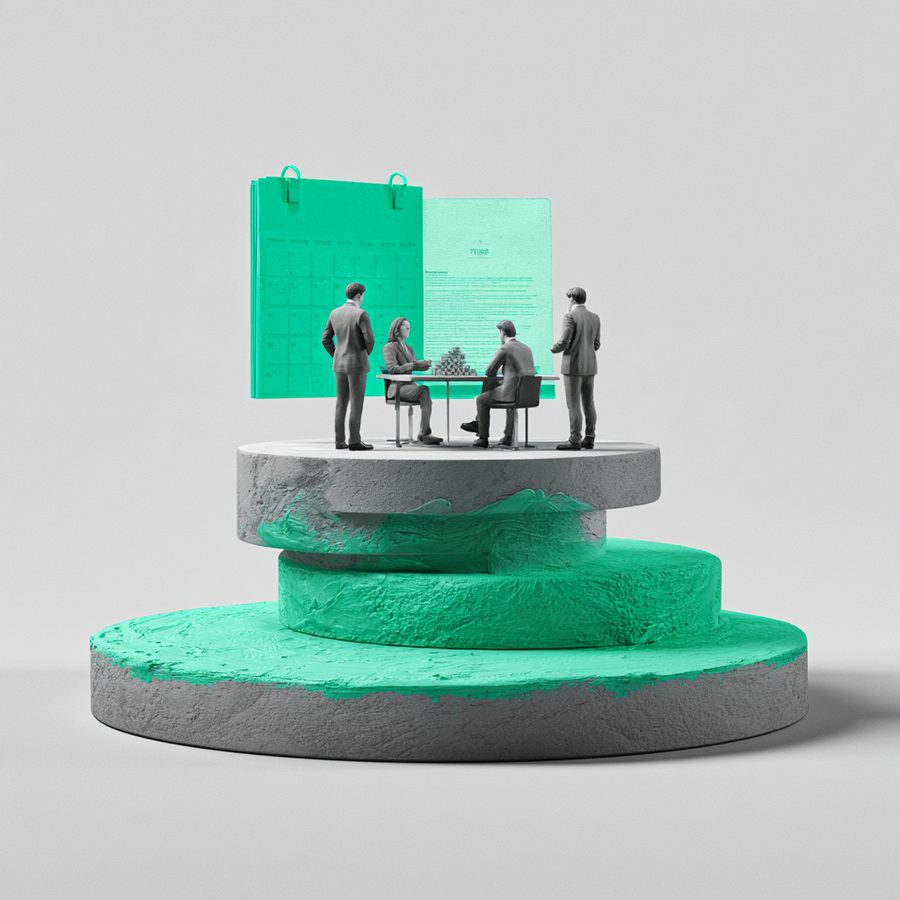

약정금 청구 소송 승소
A(의뢰인)는 B의 부탁을 받고, 허위로 4,000만원 상당의 차용증을 작성하여 주었는데, B는 갑자기 위 차용증을 근거로 A에게 4,000만원 대여금 청구를 하였습니다. 법원은, A의 주장을 받아들여 위 차용증은 통정허위표시에 기하여 작성된 것이므로 무효이고, 결국 A는 차용금 채무를 부담하지 않는다고 판시하여 A에게 전부 승소판결을 선고하였습니다.

금전피해 · 계약・사업
—
승소
사건 개요
A(의뢰인)는 B의 부탁을 받고, 허위로 4,000만원 상당의 차용증을 작성하여 주었는데, B는 갑자기 위 차용증을 근거로 A에게 4,000만원 대여금 청구를 하였습니다.
본 변호사의 전략 변호사 김용석
차용증은 처분문서이고, 명의인이 작성하였다고 인정하는 이상, 그에 따른 권리가 추정됩니다. 다만, 차용증이 A와 B가 통정허위표시로서 작성되어 무효라는 점을 주장, 입증한다면, 그 대여금 채권을 존재하지 않게 되는 것입니다. 이에, 차용증을 작성하게 된 경위에 대하여 자세히 주장하고, 관련자에 대한 증인신문, B가 주장하는 차용증 작성경위에 거짓이 있다는 점을 주장하였습니다.
결과 및 판단
법원은, A의 주장을 받아들여 위 차용증은 통정허위표시에 기하여 작성된 것이므로 무효이고, 결국 A는 차용금 채무를 부담하지 않는다고 판시하여 A에게 전부 승소판결을 선고하였습니다.
법률 인사이트
차용증, 계약서 등 처분문서의 경우, 명의인의 작성하였다고 인정되는 경우, 그 내용에 따른 권리의무가 추정됩니다. 다만, 통정허위표시, 사기강박에 의한 취소를 주장함으로써 그 권리의무가 부존재한다는 점을 주장, 입증한다면, 그 처분문서상의 내용에 따른 의무를 부담하지 않게 됩니다.